First systematic study of termination dynamics across 14 coordination topologies. 2,200+ unified runs · 7 experiments · 5 LLMs · COLM 2026 target.
Multi-agent LLM systems (AutoGen, LangGraph, CrewAI) commonly use a fixed max_turns=10 across all topologies. But a 2-agent chain and a 4-agent debate have fundamentally different convergence behaviors. Applying a uniform stop rule produces what we term termination regret — three failure modes:
Debate team continues 4 rounds past consensus, burning tokens with zero quality gain.
Sequential pipeline stops after the draft stage, never reaching the refinement that would have caught factual errors.
Selector-based team applies max-turn calibrated for flat patterns, cutting routing agent off mid-deliberation.
| Study | Patterns | Topology | Termination? |
|---|---|---|---|
| REFRAIN (2025) | 1 | single-agent CoT | yes |
| Hu et al. NeurIPS 2025 | 1 | debate-only | yes |
| Aegean (2025) | — | parallel consensus | yes |
| MAST (Cemri 2025) | ~5 | mixed | no |
| Ours | 14 | 6 categories unified | yes (topology-aware) |
Patterns grounded in Masterman et al. (2025) Chain/Star/Mesh + Tran et al. (2025) centralized/distributed split. The B1/B2 decomposition is a contribution of this work.
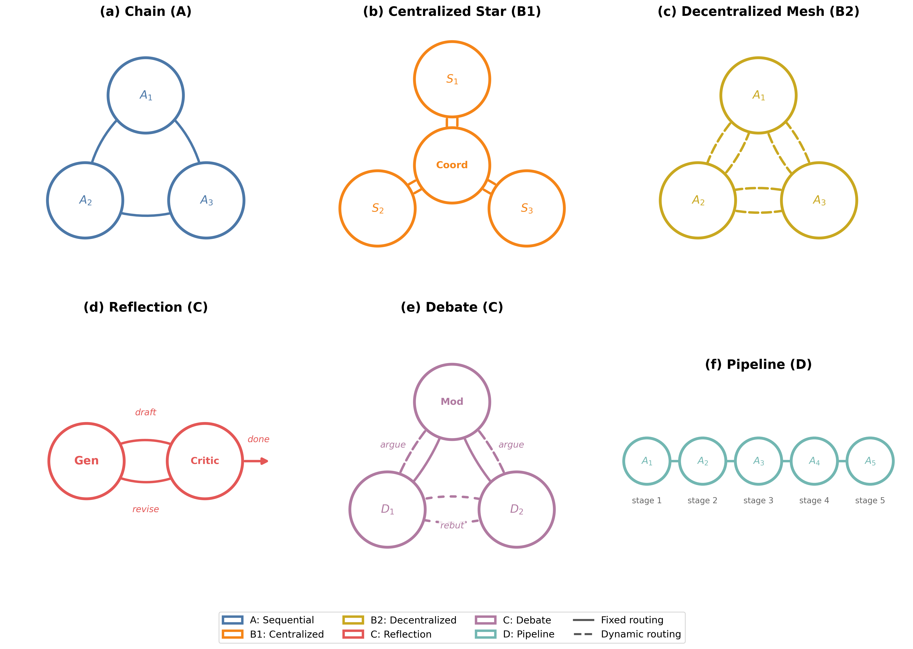
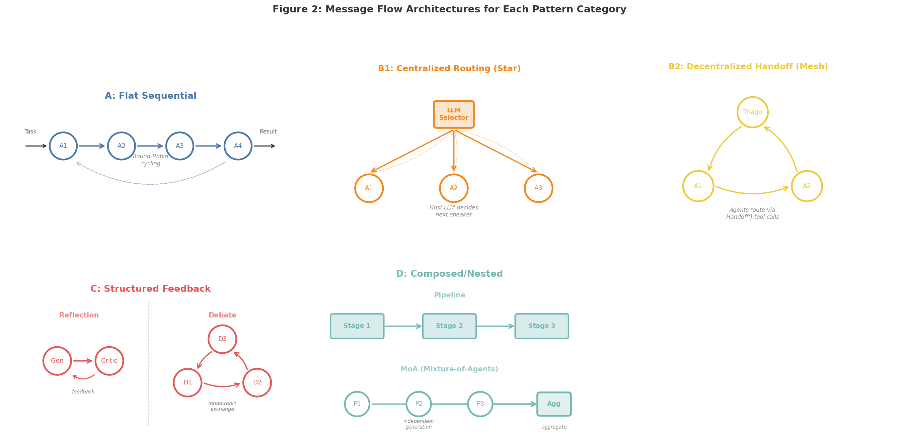
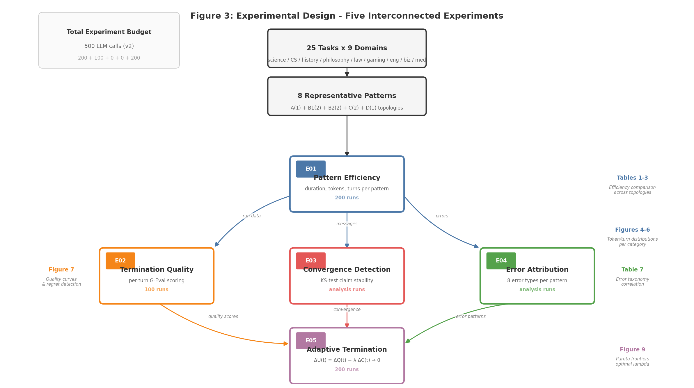
25 tasks across 9 domains (science, CS, history, philosophy, law, games, engineering, business, medicine) × 4 types (factual, analytical, technical, creative).
Claude Haiku 4.5 (agents) · Sonnet 4.5 (G-Eval judge) · GPT-4o-mini (cross-val ρ=0.900) · Gemini · GPT-5.4.
Kruskal-Wallis · Mann-Whitney U · Cohen's d · 5-fold CV · Spearman ρ · bootstrap CI.
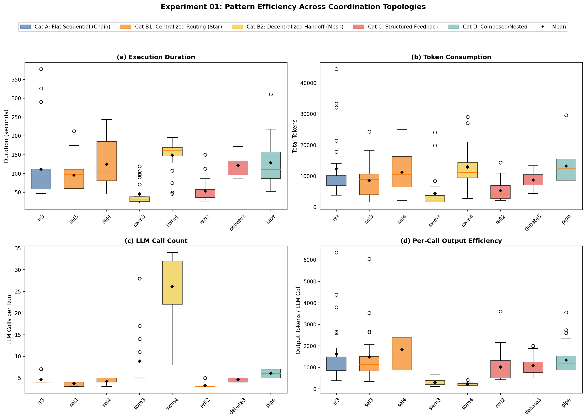
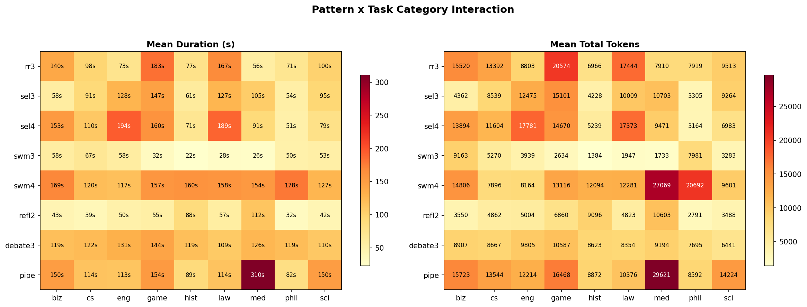
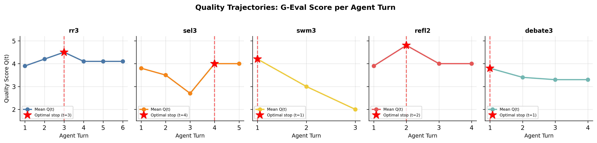
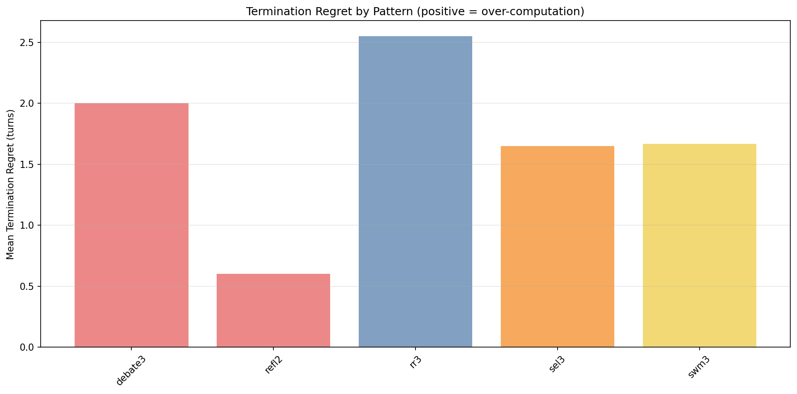
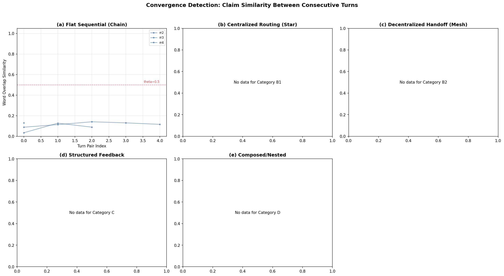
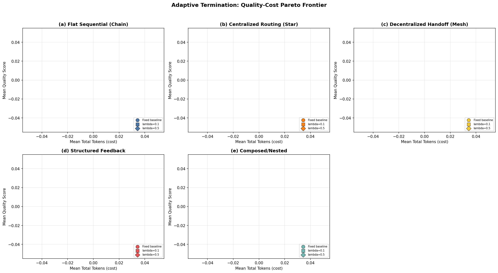
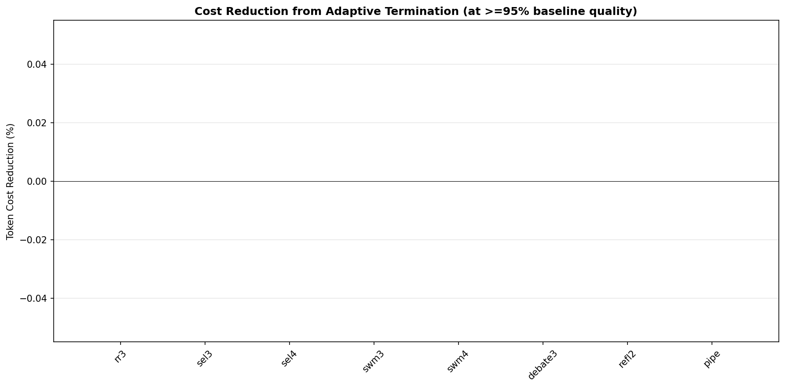
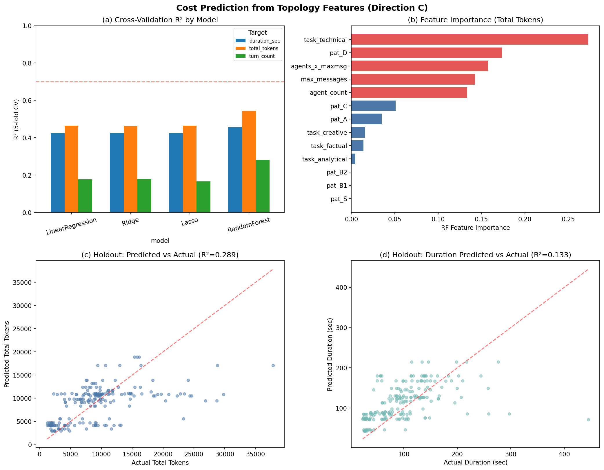
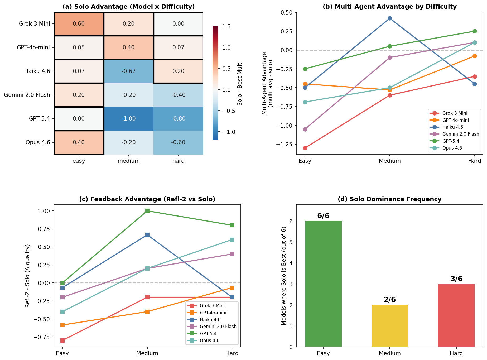
First systematic comparison of 13 patterns × 7 experiments × 2,200+ runs in unified AutoGen framework. Prior work: 1-3 patterns max.
Post-hoc G-Eval trajectory analysis identifies optimal stop point vs actual stop point. Quantifies systematic over-/under-computation.
Sentence-BERT semantic stability extending Hu NeurIPS 2025 KS-test to all 13 topologies. Shows convergence is topology-dependent.
Aligned with MAST (Cemri 2025): topology-correlated error types (token overflow / turn loop / missing keyword) per pattern.
Negative result: 7/8 keyword optimal. Positive result: B2 −70% with ΔU. Marginal utility as principled diagnostic lens, not optimizer.
RF R² = 0.54 · agents × max_messages strongest predictor · 46% task-content boundary acknowledged.
5 LLMs × 3 difficulty levels mapping. Solo dominates cost-efficiency at every level. Refl-2 helps only weak models at medium difficulty (capability moderation).
Framework released — 13 pattern implementations · 7 experiment runners · analysis scripts.
DongHyeon Kim
hanvit4303@gmail.com
COLM 2026 · Track 16